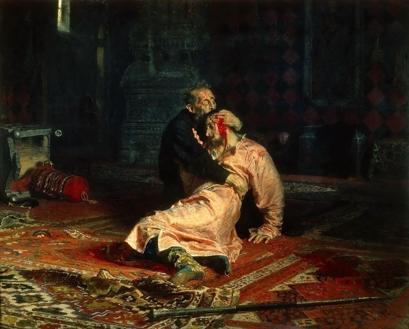

Питер Брейгель Старший - Вавилонская башня
Описание картины "Питер Брейгель Старший - Вавилонская башня":
Источник картины Питера Брейгеля «Вавилонская башня» - Книга Бытия, где повествуется о благодатной земле в долинах рек Тигр и Евфрат. Там люди, возгордившись, задумали построить башню, которая достанет до неба. Разгневавшись, Бог смешал их языки. Люди перестали понимать друг друга, а башня так и не была построена. Вавилонская башня была одним из самых распространённых мотивов нидерландской живописи XV-XVI веков. Объяснялось это интересом не столько к Библии, сколько к современности. Приморские города стремительно росли, они были переполнены приезжими торговцами и проповедниками, формировались и тут же вступали в конфликты различные религиозные группы. Только за первую половину XVI века население Антверпена, где работал Брейгель, удвоилось; не меньше тысячи из его жителей составляли иностранцы. Всё это создавало сильное мультикультурное напряжение, позволявшее сравнивать современные Брейгелю Нидерланды с Вавилоном. Но, несмотря на распространённость сюжета, никому до Брейгеля не удавалось столь достоверно передать чудовищные размеры строения. Его «Вавилонская башня» поражает размахом, доскональным знанием инженерных тонкостей и проработкой мельчайших деталей. В ней наилучшим образом проявляется уникальный метод Брейгеля, соединяющий трудносовместимое – панорамную живопись и миниатюру. По внешнему виду башня Брейгеля – это нечто среднее между оживлённым муравейником или ульем и Колизеем, который художник, несомненно, мог видеть в Риме. В левом нижнем углу Брейгель изображает царя Нимрода, окружённого свитой, который приехал проинспектировать ход строительства, и упавших перед ним на колени каменщиков.
Больше информации о картине...